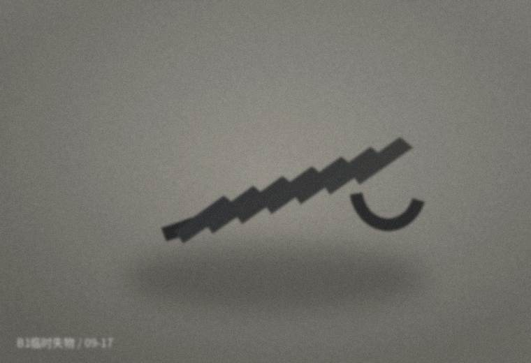
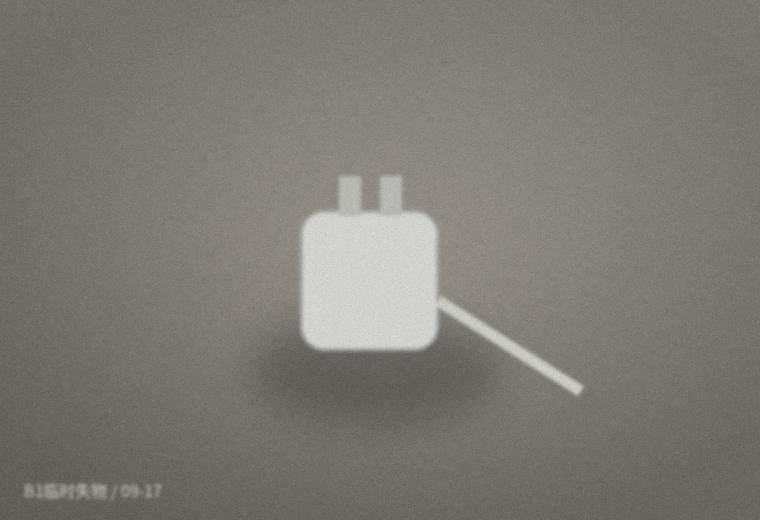
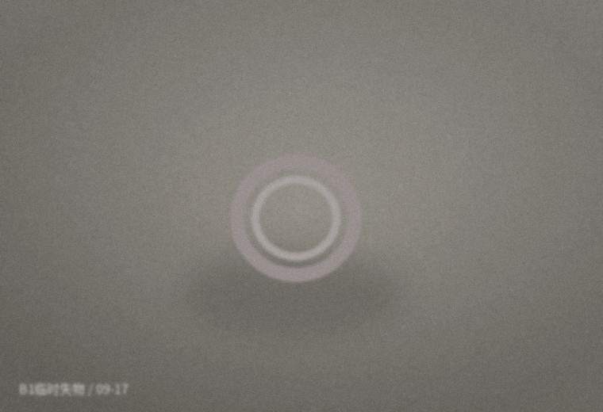
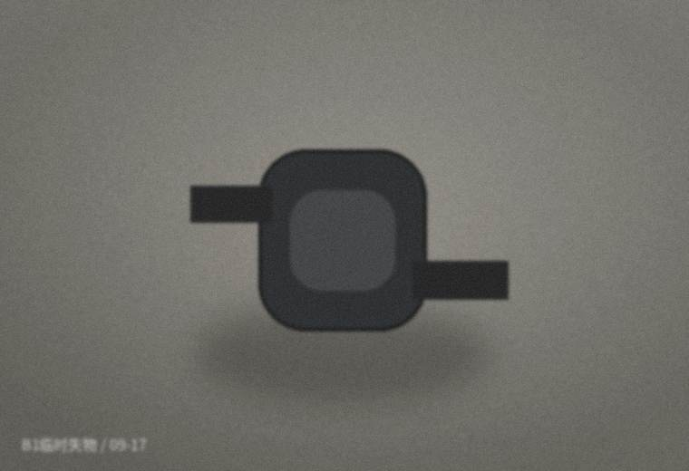
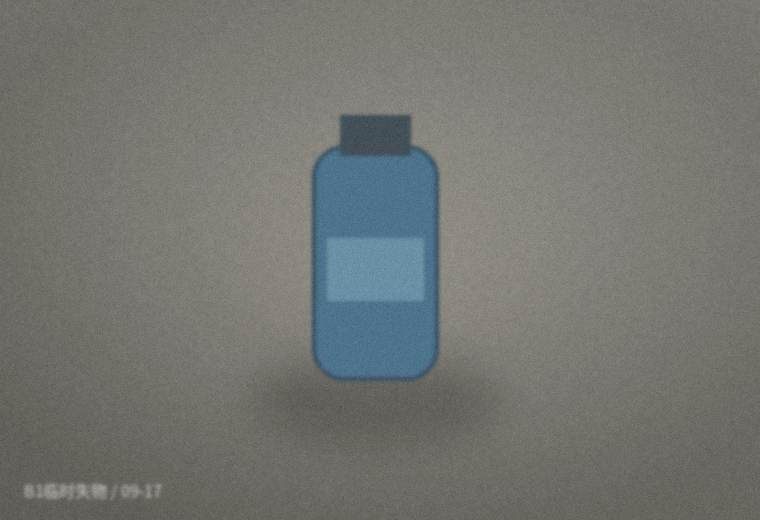
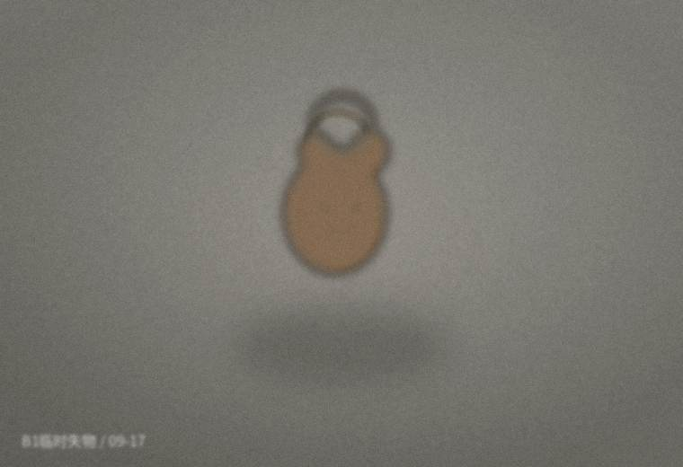

黑色折叠伞
发现位置：签到桌下面。伞套不在，手柄有一道白色划痕。
客服备注：有人凌晨三点问过“是不是在你们那”，但没说清楚手柄特征，暂未交付。
待认领
保留至 09/24
保留至 09/24
客服通常会先让本人说颜色、品牌或明显特征，再约时间到 B1 签到桌领取。下面的照片是收场时随手拍的，光线和角度都不太讲究。

发现位置：签到桌下面。伞套不在，手柄有一道白色划痕。
客服备注：有人凌晨三点问过“是不是在你们那”，但没说清楚手柄特征，暂未交付。

发现位置：B1 储物架 08—09 柜之间。线和充电头缠在一起。
客服备注：第29场有人说自己的充电线找不到，后来又说“算了回家再买”。没有留下物品描述。

发现位置：儿童区走廊。照片发到群里十分钟后被认领。
领取备注：本人说“我以为掉在车上了”，第二天下午来取。

发现位置：休息区长椅。第25场结束后群里有人问“谁只带了一只护膝回家”。
这条后来被截进“800块体能测试”那串玩笑里。

发现位置：财务台旁。杯身没有贴名字，客服在群里问过两次。
七天后仍无人确认，按小件规则清理。旧帖里有人记得它“在桌上放了好几场”。

发现位置：西门楼梯。背面贴过一小块透明胶。
领取时本人顺口问了一句：“你们下场还在这集合吗？”客服回：暂时是。
失物页面不会保存参与者姓名。超过保留期的小件会统一处理；证件、手机和钥匙类会另行登记。